Abstract
Accurate temperature forecasting plays a critical role in energy management, building operation optimization, and sustainable energy system planning. Reliable short-term temperature prediction can significantly improve the operational efficiency of heating, ventilation, and air conditioning systems, data centers, and smart energy infrastructures. This paper introduces a temperature prediction method that uses multiple weather prediction datasets to establish models for the maximum and minimum temperatures. A temporal convolutional network (TCN) is used for temperature prediction and a conditional tabular generative adversarial network (CTGAN) for data augmentation. Given the challenge of fitting CTGAN-generated synthetic data to the original data and the inefficiency of hyperparameter tuning for CTGANs, this study adopts a series of data preprocessing methods — outlier removal with a one-class support vector machine, dataset normalization, and the Yeo–Johnson transformation — that bring the distribution of the synthesized data close to that of the original data. The proposed TCN + CTGAN model with preprocessing consistently outperformed the TCN baseline and the unprocessed augmentation variant across all experimental configurations. On the Seattle dataset, the model achieved R2 values of 0.829 and 0.819 for the maximum and minimum temperatures, with corresponding RMSE values of 3.039 and 2.136. On the Seoul dataset, R2 values of 0.441 and 0.681 were obtained, with RMSE values of 2.346 and 1.395.
Key Results
Seattle maximum temperature with the full workflow (MAE 2.397, RMSE 3.039), against 0.822 for the TCN baseline and 0.801 for unprocessed CTGAN augmentation
Wasserstein distance between synthetic and real Seattle maximum temperatures, 1.463 → 0.167 across the three preprocessing stages — standardisation alone accounts for 1.283 → 0.175
dataset–target combinations where the proposed workflow beats both the TCN baseline and unprocessed augmentation, across two climates and 10-fold cross-validation
Method
CTGAN is fitted inside each cross-validation fold, so synthetic samples never see the held-out test data. The contribution is the preprocessing stage between generation and training: it aligns the synthetic distribution with the real one without any CTGAN hyperparameter search.
Datasets
Two publicly available meteorological datasets with different climates, scales, and temporal coverage. Only the target temperature variable is fed to the model — adding further weather variables degraded accuracy, as the input configuration table below shows.
| Dataset | Source | Records | Period | Targets |
|---|---|---|---|---|
| Seattle | Kaggle — Weather Prediction | 1,461 | 2012-01-01 – 2015-12-31, daily | next-day Tmax / Tmin |
| Seoul | UCI — Bias correction of numerical prediction model temperature forecast | 7,750 | Summers (Jun–Aug) 2013 – 2017, 26 stations | next-day Tmax / Tmin |
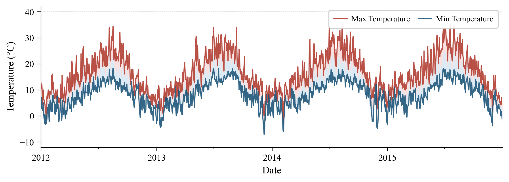
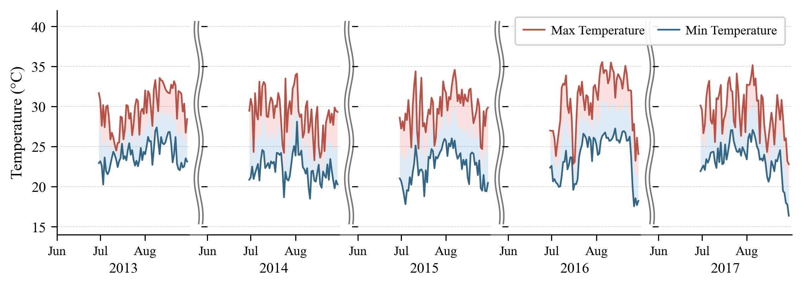
Aligning Synthetic Data with Real Data
Raw CTGAN output does not match the real distribution, and training on it makes forecasts worse. Each preprocessing stage is scored with the Wasserstein distance between the synthetic and original distributions — lower is closer.
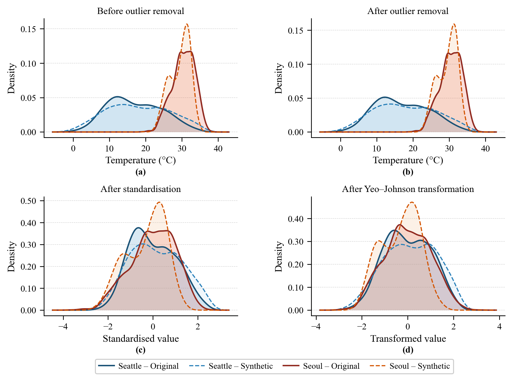
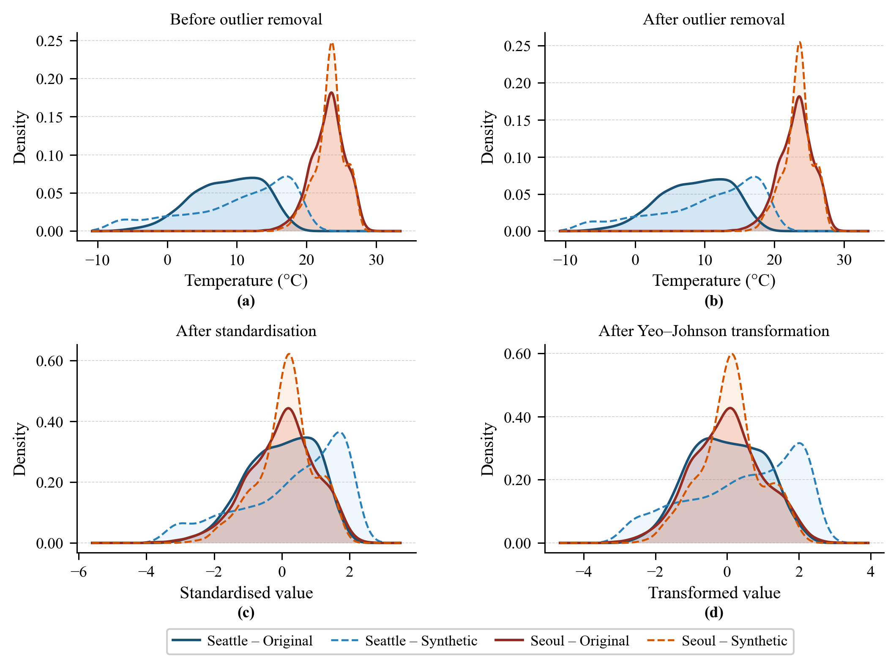
| Stage | Seattle Tmax | Seattle Tmin | Seoul Tmax | Seoul Tmin |
|---|---|---|---|---|
| Before outlier removal | 1.463 | 3.001 | 0.964 | 0.359 |
| After outlier removal | 1.283 | 2.956 | 0.959 | 0.419 |
| After standardisation | 0.175 | 0.595 | 0.309 | 0.172 |
| After Yeo–Johnson transformation | 0.167 | 0.646 | 0.323 | 0.163 |
Standardisation is by far the most impactful step. The Yeo–Johnson transformation optimises for normality rather than for transport cost, so it can raise the distance slightly (Seattle Tmin, Seoul Tmax) while still improving the shape alignment visible in the density plots.
Results
All numbers are pooled over the 10 cross-validation folds: the test predictions of every fold are concatenated and scored once, rather than averaging per-fold metrics.
Proposed workflow vs. baseline and unprocessed augmentation
| Dataset | Target | Model | MAE | RMSE | R2 |
|---|---|---|---|---|---|
| Seattle | Maximum | TCN | 2.441 | 3.098 | 0.822 |
| TCN + CTGAN (no preprocessing) | 2.581 | 3.282 | 0.801 | ||
| TCN + CTGAN (with preprocessing) | 2.397 | 3.039 | 0.829 | ||
| Minimum | TCN | 1.704 | 2.167 | 0.814 | |
| TCN + CTGAN (no preprocessing) | 1.857 | 2.404 | 0.771 | ||
| TCN + CTGAN (with preprocessing) | 1.664 | 2.136 | 0.819 | ||
| Seoul | Maximum | TCN | 1.984 | 2.459 | 0.386 |
| TCN + CTGAN (no preprocessing) | 1.991 | 2.457 | 0.387 | ||
| TCN + CTGAN (with preprocessing) | 1.863 | 2.346 | 0.441 | ||
| Minimum | TCN | 1.098 | 1.424 | 0.667 | |
| TCN + CTGAN (no preprocessing) | 1.130 | 1.461 | 0.650 | ||
| TCN + CTGAN (with preprocessing) | 1.077 | 1.395 | 0.681 |
Unprocessed synthetic data degrades every configuration; after preprocessing, the same synthetic data improves every configuration.
Choosing the backbone — seven models under identical conditions
| Dataset | Target | Model | MAE | RMSE | R2 |
|---|---|---|---|---|---|
| Seattle | Maximum | TCN | 2.441 | 3.098 | 0.822 |
| ARIMA | 2.545 | 3.284 | 0.800 | ||
| Random Forest | 2.589 | 3.288 | 0.800 | ||
| LSTM | 3.025 | 3.831 | 0.728 | ||
| GRU | 3.163 | 3.977 | 0.707 | ||
| LightGBM | 3.243 | 4.034 | 0.699 | ||
| SVM | 3.339 | 4.346 | 0.650 | ||
| Minimum | TCN | 1.704 | 2.167 | 0.814 | |
| ARIMA | 1.748 | 2.240 | 0.801 | ||
| Random Forest | 1.765 | 2.244 | 0.800 | ||
| SVM | 2.211 | 2.884 | 0.670 | ||
| GRU | 2.225 | 2.855 | 0.677 | ||
| LightGBM | 2.226 | 2.749 | 0.700 | ||
| LSTM | 2.290 | 2.940 | 0.657 | ||
| Seoul | Maximum | TCN | 1.984 | 2.459 | 0.386 |
| SVM | 2.001 | 2.476 | 0.378 | ||
| Random Forest | 2.028 | 2.536 | 0.347 | ||
| GRU | 2.096 | 2.585 | 0.321 | ||
| LightGBM | 2.120 | 2.607 | 0.310 | ||
| LSTM | 2.121 | 2.616 | 0.305 | ||
| ARIMA | 2.269 | 2.955 | 0.113 | ||
| Minimum | TCN | 1.098 | 1.424 | 0.667 | |
| Random Forest | 1.196 | 1.534 | 0.614 | ||
| SVM | 1.208 | 1.556 | 0.603 | ||
| GRU | 1.218 | 1.572 | 0.595 | ||
| ARIMA | 1.229 | 1.615 | 0.572 | ||
| LSTM | 1.289 | 1.665 | 0.545 | ||
| LightGBM | 1.311 | 1.662 | 0.547 |
Ranked by MAE within each block, no augmentation applied. TCN gives the lowest MAE and the highest R2 in all four dataset–target combinations, which is why it is adopted as the backbone.
Input configuration — Seattle
| Target | Input | MAE | RMSE | R2 |
|---|---|---|---|---|
| Maximum | Only the max temperature | 2.441 | 3.098 | 0.822 |
| All numerical data | 2.648 | 3.373 | 0.789 | |
| All (incl. weather type) | 2.826 | 3.601 | 0.760 | |
| Minimum | Only the min temperature | 1.704 | 2.167 | 0.814 |
| All numerical data | 1.719 | 2.189 | 0.810 | |
| All (incl. weather type) | 1.832 | 2.355 | 0.780 |
Extra meteorological variables act as noise for next-day temperature forecasting, so the univariate configuration is used throughout.
Prediction Quality
Pooled predictions of the final TCN + CTGAN (processed) model across all ten folds.
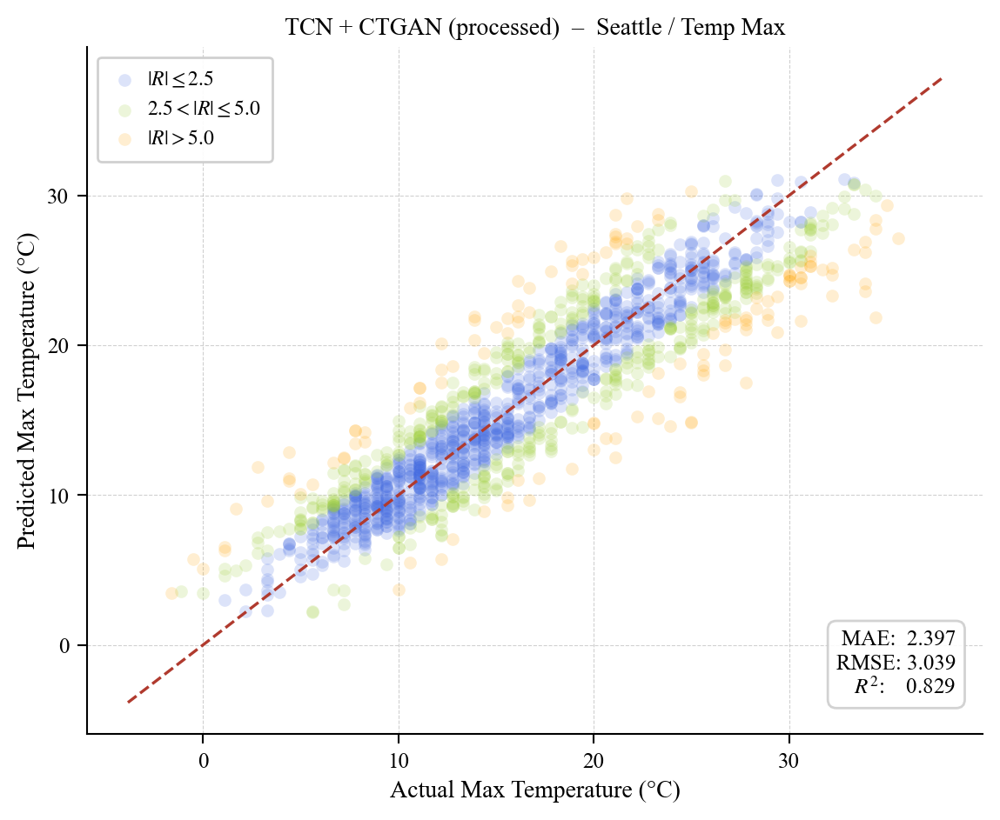
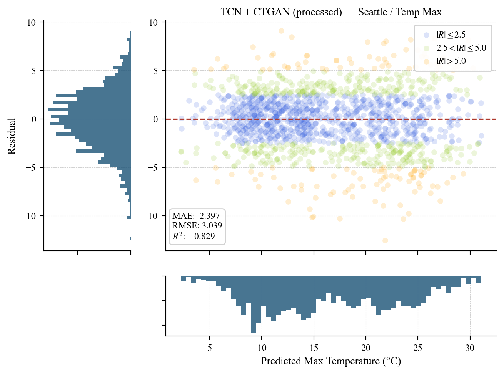
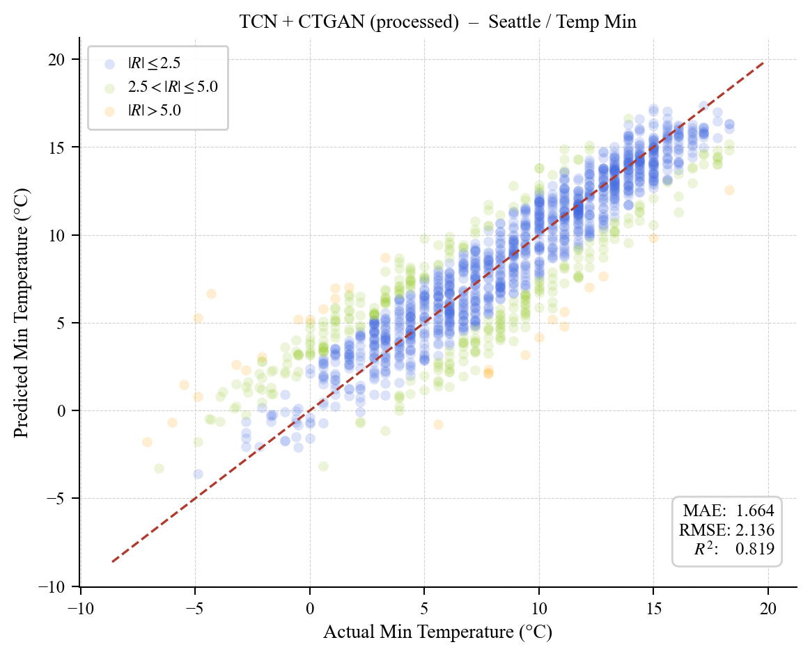
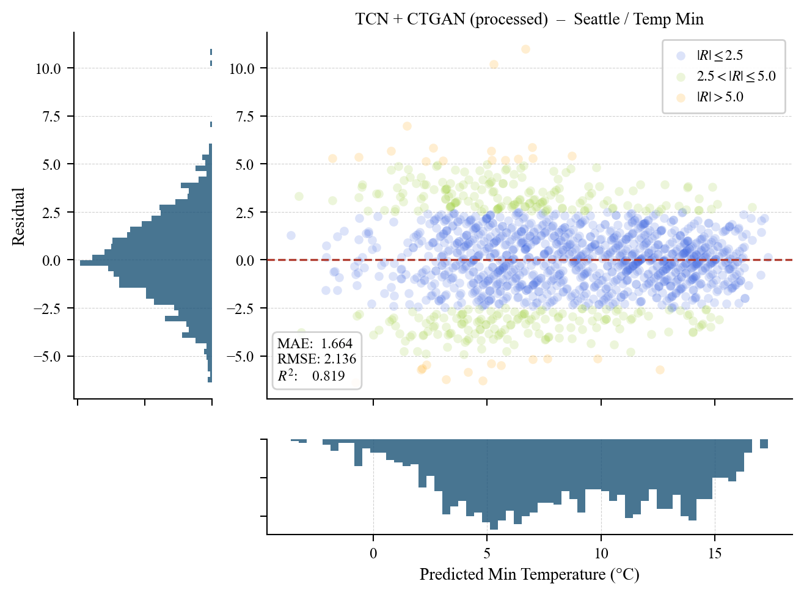
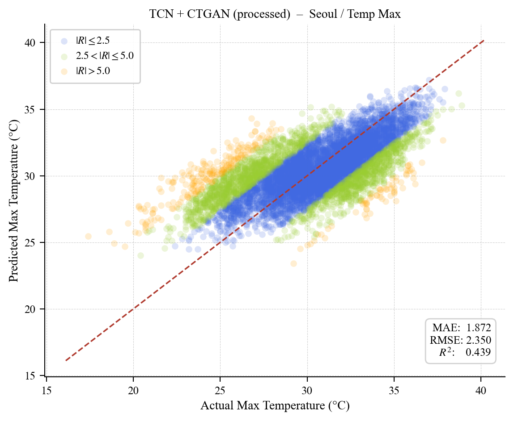
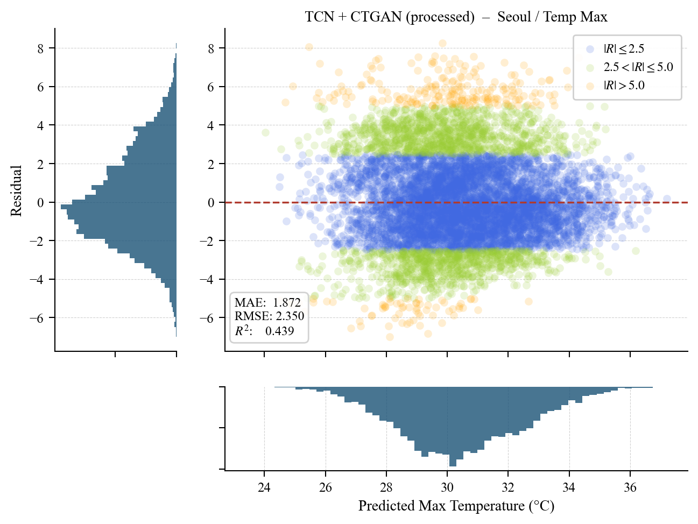
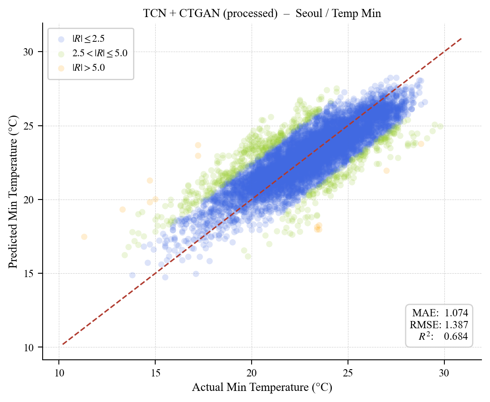
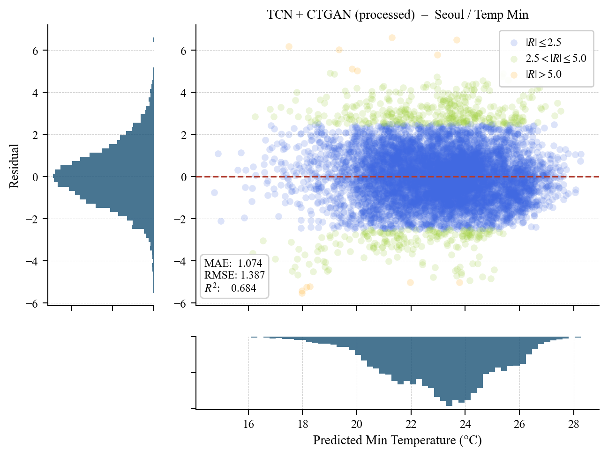
BibTeX
@article{kuo2026enhancing,
title = {Enhancing Temperature Forecasting for Sustainable Energy Systems Using
CTGAN-Based Data Augmentation and Temporal Convolutional Networks},
author = {Kuo, Ping-Huan and Lin, Yu-Sian and Chiu, Yu-Chih},
journal = {Energy Reports},
year = {2026},
note = {In press}
}